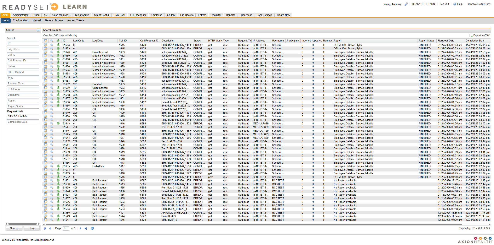

The API logs allow you to view and audit when API calls have been triggered and their status. The API logs can be viewed from the Logs menu on the APIs tab.
The log records table can be searched and filtered using the Search pane and can be exported to a CSV by clicking Export to CSV.
For each record, you can do any of the following:
